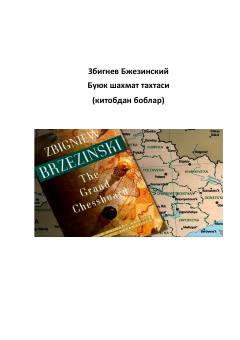

BSYevroosiyo qit'asining global siyosat va geosiyosatdagi hal qiluvchi roli haqidagi asar.
Mazkur kitobda jahon siyosati va geosiyosatning asosiy markazi bo'lgan Yevroosiyo qit'asining global ahamiyati tahlil qilinadi. Muallif Qo'shma Shtatlarning dunyodagi yetakchilik mavqei va Yevroosiyodagi geopolitik muvozanatni saqlash strategiyalariga e'tibor qaratadi. Shuningdek, SSSR parchalanganidan keyingi yuzaga kelgan yangi siyosiy vaziyat va Rossiyaning geopolitik ahvoli batafsil yoritilgan.